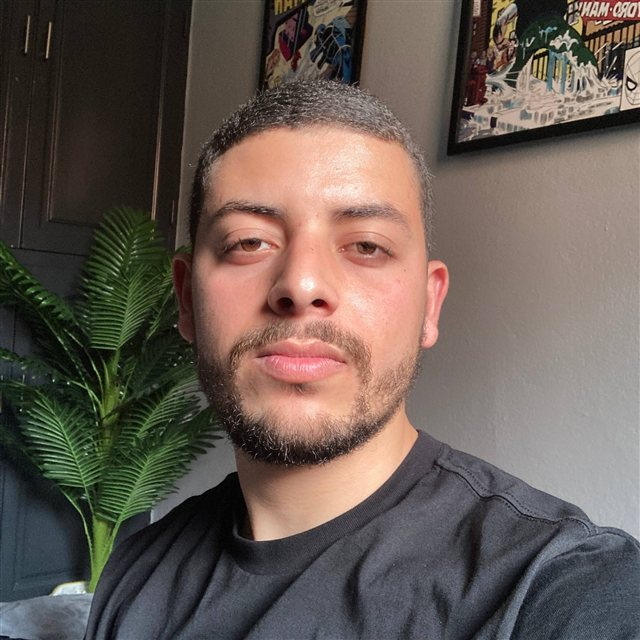

Selected work
-
Soccer Player Injury Prediction
Machine learning internship, Association ARSII
Test-set scores of the three tuned models. Predicts whether a professional player will get injured during a season, using only data available before it starts. I merged player, match, injury and FIFA rating data into 2,329 player-seasons, then tuned Logistic Regression, Random Forest and XGBoost with cross-validation.
XGBoost: F1 0.78, recall 89%Python · pandas · scikit-learn · XGBoost
View code -
Fashion Recommendation System
University project, H&M dataset
New users with no history get content-based picks seeded with popular items. A hybrid recommender that blends collaborative filtering (TruncatedSVD on the user-item matrix) with content-based cosine similarity, handles cold-start users with popular items, and serves results through a small Flask REST API.
Python · scikit-learn · pandas · Flask
View code -
E-Commerce Data Warehouse
Olist Brazilian e-commerce dataset
Star schema in PostgreSQL, loaded by the pygrametl ETL. A PostgreSQL star schema with a sales fact table and five dimensions, loaded by an automated Python ETL pipeline (pygrametl), with ten analytical charts generated from SQL queries.
PostgreSQL · SQL · Python · pygrametl · matplotlib
View code -
Stadium Reservation Microservices
Soccer stadium booking platform
Services talk over gRPC; events flow through Kafka. Node.js microservices behind an API gateway that speaks REST and GraphQL. Services talk to each other over gRPC and publish reservation events on Apache Kafka for real-time notifications.
Node.js · gRPC · Apache Kafka · GraphQL · SQLite
View code
More projects
- Sentiment JournalJournaling app that uses Google Gemini to read the mood of each entry and charts emotional trends over time.Flutter · Firebase · Gemini API · Riverpod
- Jerbi AppEvent reservation management: a Flutter admin app with its own REST API.Flutter · Node.js · Express · MongoDB
- EatsyRecipe and meal-planning web app with a weekly planner, statistics dashboard and user accounts.Blazor · .NET · EF Core · SQLite
- Internship ManagerInternship platform with four roles, CV uploads, applications and email notifications.Symfony · PHP · MySQL
- Habit TrackerAndroid app to track daily habits by category, with statistics and a PHP API.Java · Android · Retrofit · PHP · MySQL
- Recipe BookFull-stack recipe manager with an Angular frontend and an Express REST API.Angular · Express · MongoDB
- Clothing InventoryInventory management for a clothing store, with login and full CRUD.Django · Python · MySQL
- Employee DashboardEmployee records dashboard with add, edit and delete on a mock REST API.Angular · RxJS · json-server
Experience
-
Machine Learning Intern
Association ARSII · Sousse
- Built an ML pipeline (Python, scikit-learn, pandas) merging three football data sources into 2,329 player-seasons to predict injury risk.
- Tuned XGBoost and Random Forest with 5-fold CV; XGBoost scored best (test F1 0.78, recall 89%).
-
Mobile Developer Intern
SOTUPUB · Sousse
- Built a cross-platform event management app for iOS and Android with Flutter and Dart.
- Developed the REST API for event reservations with Node.js, Express and MongoDB.
-
Software Tester Intern
DRÄXLMAIER · Sousse
- Wrote automated test scripts in Python and Robot Framework for regression cycles.
- Designed systematic test cases to catch bugs early.
Education
-
Engineering Degree, Data Science & AI
Polytechnic School of Sousse
- Machine Learning, Data Warehousing, NLP, LLMs & RAG, AI Agents, Graph Theory, Service-Oriented Architecture, Cybersecurity
-
Bachelor's Degree, Computer Engineering
ISITCOM, Sousse
- Data Structures & Algorithms, Computer Networks, Web Development, Operating Systems, Embedded Systems
-
Baccalaureate in Mathematics
Ali Bourguiba High School, Sousse
Skills
- Programming
- Python, Java, C, C++, SQL
- ML & Data
- pandas, scikit-learn, XGBoost, Seaborn, Matplotlib
- Backend & Mobile
- Node.js, Express, REST, GraphQL, gRPC, Kafka, microservices, Flutter
- Databases
- PostgreSQL, MySQL, MongoDB, Firebase
- Tools & Testing
- Git, Robot Framework
- Languages
- Arabic (fluent), English (C1), French (B1)
- Competed in La Nuit de l'Info (2022, 2023, 2024), a 24-hour national team hackathon.
- Honorable Mention at the 2025 ICPC Tunisian Collegiate Programming Contest (TCPC). Certificate (PDF)
Let's talk
I'm looking for a PFE internship in data science, machine learning or backend engineering. The fastest way to reach me is email.